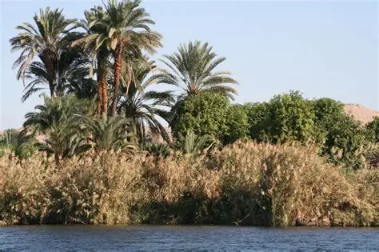

Flore
L'Égypte est un pays principalement constitué de désert : environ 94 % du territoire est désertique et seulement 3,5 % de la superficie est cultivée et habitée de manière permanente. Malgré cela, les plantes ont su se développer et s'adapter. On y trouve par exemple des lotus, des papyrus ou encore des palmiers. La vallée du Nil est très importante, car c'est l'une des seules zones cultivables grâce à l'irrigation apportée par le fleuve.
